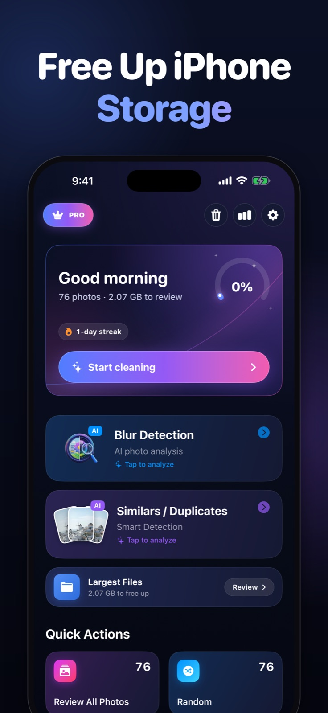
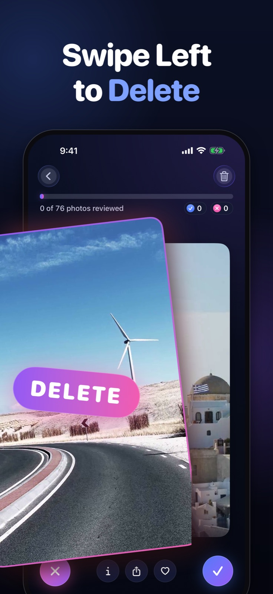
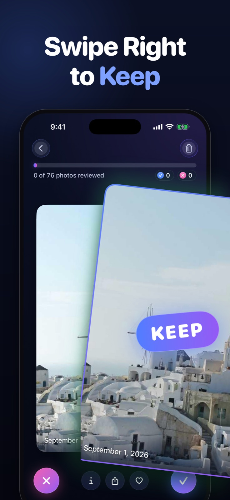
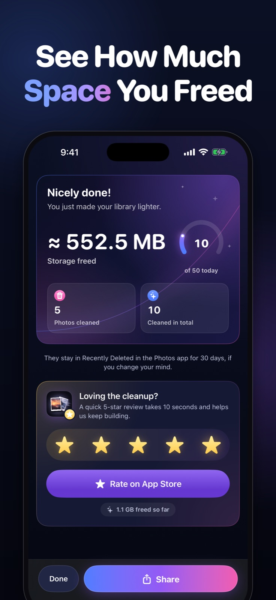
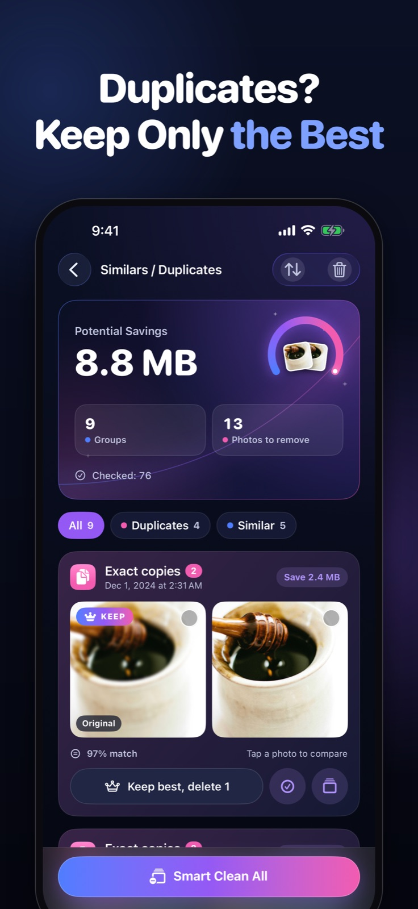
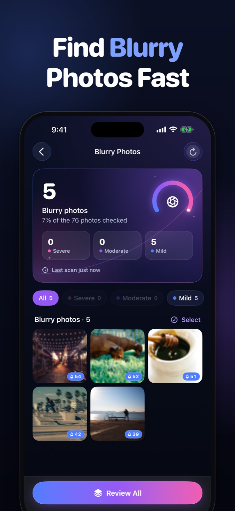
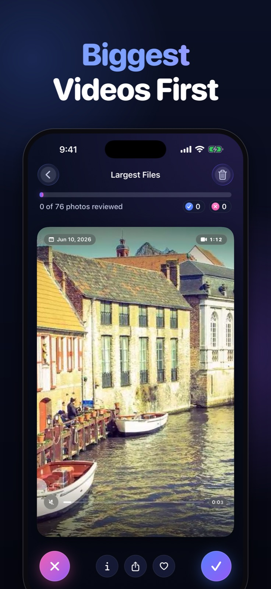
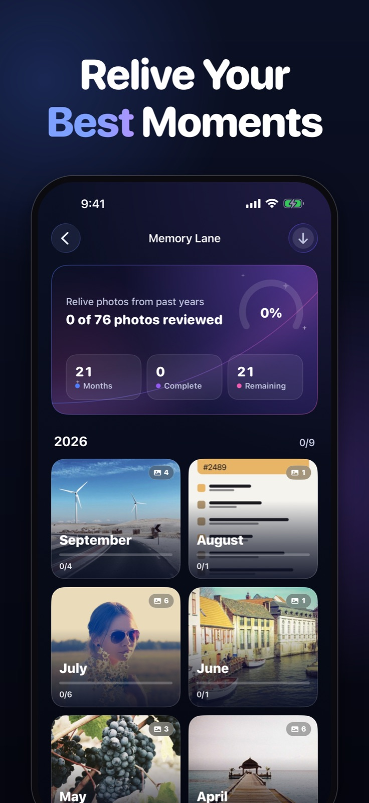

Photo Cleaner press kit
Updated · By Mohamed Elatabany
Everything you need to write about Photo Cleaner: Swipe Cleanup in one place. The text on this page can be quoted as it is, and the icon, screenshots and video can be used in coverage of the app.
Photo Cleaner in one sentence
Photo Cleaner is an iPhone and iPad app that cleans up your photo library one swipe at a time (left to delete, right to keep), with a Trash Bin you review before anything is deleted.
Boilerplate (60 words)
Photo Cleaner: Swipe Cleanup is an iPhone and iPad app by Mohamed Elatabany. Swipe left to delete and right to keep, then review everything in a Trash Bin before iOS asks you to confirm. It also finds duplicates and similar shots, blurry photos, screenshots and large videos. All analysis runs on the device, with no account and no photo uploads.
Facts at a glance
- Name
- Photo Cleaner (App Store name: Photo Cleaner: Swipe Cleanup)
- Developer
- Mohamed Elatabany
- Platforms
- iPhone and iPad, iOS 17 or later (iPadOS 17 or later on iPad)
- Languages
- 10: English, French, German, Italian, Japanese, Korean, Portuguese, Russian, Chinese (Simplified) and Spanish
- Price
- Free to download, with 100 free deletions (a one-time allowance, it does not refill). Photo Cleaner Pro unlocks unlimited deletions as a weekly, monthly or yearly subscription, or as a one-time lifetime purchase. Prices vary by country and are shown on the App Store.
- Privacy
- 100% on-device processing. No account, no photo uploads, no data collection, no ads. Works offline.
- Category
- Utilities · age rating 4+
- Released
- June 2025. Current version 2.3.0 (November 2026)
- Rating
- 4.6★ on the App Store, from 35 ratings (US App Store, November 2026)
- App Store
- apps.apple.com/app/id6746700862 (App Store ID 6746700862)
- Website
- getphotocleaner.com
What makes it different: swiping never deletes
Swipe-to-clean is fast because every decision takes about a second, but fast decisions need a safety net. In Photo Cleaner, a left swipe only marks a photo. Deletion takes three separate steps:
- Trash Bin. Swiped photos wait in the app's Trash Bin. Nothing has been deleted yet, and anything can be restored with a tap.
- iOS confirmation. When you empty the Trash Bin, iOS shows its own confirmation dialog. Nothing is removed until you confirm there.
- Recently Deleted. Confirmed photos move to the Recently Deleted album in the Photos app, where iOS keeps them for 30 days before removing them for good.
The rest of the app is built around that review step: it points you at what is worth reviewing, and you make every decision.
Features
- Swipe to clean: left to delete, right to keep, one photo at a time, with undo.
- Similars / Duplicates: groups exact copies and near-identical shots and marks the best one.
- Blur Detection: on-device analysis flags shots that are likely out of focus or shaken.
- Largest Files: photos and videos sorted by size, with big 4K videos first.
- Categories: Screenshots, Videos, Live Photos, Bursts, Favorites and messaging-app albums such as WhatsApp.
- Memory Lane and Today's Throwback: review your library month by month, or photos from this day in past years.
- Session recap, stats and streaks: photos cleaned and estimated storage freed after each session.
- Private by design: everything runs on the device, with no account and no uploads.
Screenshots
Eight App Store screenshots in English, as JPEGs (736 × 1600). Tap one to open the full image.

1. Home 
2. Swipe left to delete 
3. Swipe right to keep 
4. Session recap 
5. Similars / Duplicates 
6. Blur Detection 
7. Largest Files 
8. Memory Lane


App preview video
The App Store preview: 18 seconds, 886 × 1920, MP4 (H.264) with audio.
Download the video (MP4, 6.7 MB) · Poster frame (JPEG)

App icon
Icon, 1024 × 1024 PNG · Icon, 512 × 512 PNG. Please don't change its colours or crop the artwork.


Naming and claims
- Write the name as Photo Cleaner; the full App Store name is Photo Cleaner: Swipe Cleanup.
- How much storage people free depends on their library. The app shows an estimate after each session; it does not promise a fixed amount.
- With iCloud Photos turned on, a confirmed deletion also applies to the user's other devices. That is how iCloud Photos sync works, whichever app deletes the photo. More on iCloud Photos and storage.
Press contact
Mohamed Elatabany, independent developer, Dubai. Reach him through GitHub or the App Store listing, and please mention your publication and deadline. More about the developer: About Photo Cleaner and its developer · GitHub · Developer on the App Store.
Useful background: best photo cleaner apps for iPhone, photo cleaner apps with a one-time purchase, how Recently Deleted works.